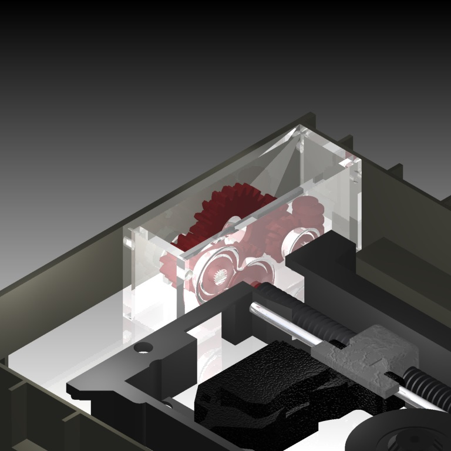

In Class Projects

Studying in Woburn C.I. and McMaster University has given me many opportunities to work on projects relevant to Engineering. Through these I have learned about the proper process required to build a system according to the specification. Some relevant projects I have worked on are Building an Analog to Digital Converter, and building the internal gearing to a CD Drive.
Analog to Digital Converter

The most recent class project I worked on was to design and construct an analog to digital converter with electrical components. The board was designed and simulated on National Instruments MultiSim. Once the simulations were successful, the circuit was constructed on a breadboard using a myDAQ to provide the signal and read the feedback by the computer.
CD Drive

Similarly I have worked on projects related to designing and manufacturing mechanical parts for a CD Drive. The simulation and design of this particular project was done on Autodesk Inventor and MapleSim. Once the design was validated, a prototype was manufactured on a RepRap 3D printer and tested. The project helped me learn a lot about the modeling and simulation capabilities of MapleSim.